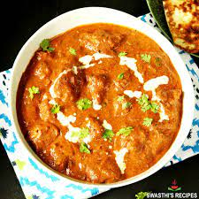
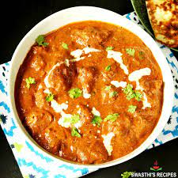

Recipies
Double Chocolate Cookies
Origin: Michigan, Source: Family Recipie, Category: Dessert
My daughter learned to make these cookies at a baking camp at Zingermanns and has tweaked the recipe to fit the taste buds of her siblings. They are extremely sugary so the salt helps to balance it. Note, these cookies are best eaten very quickly.
Recipe Ingredients
- Unsalted butter
- Granulated Sugar
- Packed light or dark brown sugar
- Large egg
- Pure vanilla extract
- Semi-sweet chocolate chunks (melted)
- All-purpose flour
- Natural unsweetened cocoa powder
- Baking soda
- Salt
- Semi-sweet chocolate chunks
Recipe Steps
- In a mixing bowl cream together the butter, granulated sugar, and brown sugar
- Add the egg and vanilla extract and beat well
- Add the melted chocolate
- In a separate bowl combine the flour, baking soda, cocoa powder and salt
- Combine the wet and dry ingredients
- Add the unmelted chocolate chunks.
- Form 15 cookies and place on a baking sheet.
- Cooke for 12 to 13 minutes at 350 degrees.
Chicken Tikka Masala
Origin: Indian, Source: Cafe Delites ,Category: Main Dish

This Chicken Tikka Masala recipe brings the flavors of a traditional Indian restaurant into your home kitchen. It features aromatic golden chicken pieces in a rich and creamy curry sauce.
Recipe Ingredients
- Boneless Chicken
- Yogurt
- Minced Garlic
- Ginger
- Garam Masala
- Tumeric
- Cumin
- Chili
- Salt
Recipe Steps
- In a bowl, combine chicken with all of the ingredients for the chicken marinade; let marinate for 10 minutes to an hour (or overnight if time allows).
- Heat oil in a large skillet or pot over medium-high heat. When sizzling, add chicken pieces in batches of two or three, making sure not to crowd the pan.
- Fry until browned for only 3 minutes on each side. Set aside and keep warm. (You will finish cooking the chicken in the sauce.)
- Melt the butter in the same pan. Fry the onions until soft (about 3 minutes) while scraping up any browned bits stuck on the bottom of the pan.
- Add garlic and ginger and sauté for 1 minute until fragrant, then add garam masala, cumin, turmeric and coriander. Fry for about 20 seconds until fragrant, while stirring occasionally.
- Pour in the tomato puree, chili powders and salt. Let simmer for about 10-15 minutes, stirring occasionally until sauce thickens and becomes a deep brown red colour.
- Stir the cream and sugar through the sauce. Add the chicken and its juices back into the pan and cook for an additional 8-10 minutes until chicken is cooked through and the sauce is thick and bubbling. Pour in the water to thin out the sauce, if needed.
- Garnish with cilantro (coriander) and serve with hot garlic butter rice and fresh homemade Naan bread!
 


Gulab Jamun
Origin: Indian, Source: Indian Healthy Recipes, Category: Dessert
Gulab Jamun, a classic Indian sweet, is made from milk solids and flour, deep-fried and soaked in a sugary syrup. This version uses milk powder for convenience and has a soft, melt-in-your-mouth texture.
Recipe Ingredients
- Khoya
- Maida
- Baking Powder
- Cardamom Powder
- Milk
- Paneer
- Oil
- Sugar
- Water
- Cardamom Powder
- Rose Water
- Lemon Juice
Recipe Steps
- Mix milk powder, maida, and baking powder in a bowl.
- Add ghee to the mixture.
- Gradually add milk to form a soft dough.
- Let the dough rest for 10 minutes.
- Prepare sugar syrup with sugar, water, cardamom, and saffron.
- Add lemon juice and rose water to the syrup after boiling.
- Form small balls from the dough ensuring no cracks.
- Deep fry the balls in medium hot oil or ghee until golden brown.
- Soak the fried balls in hot sugar syrup for 2 hours.
- Enjoy the Gulab Jamun as desired.

Family Favorite Baked Mac and Cheese
Origin: American, Source: The Chunky Chef, Category: Main Dish

This creamy baked mac and cheese recipe is a family favorite, featuring a rich and creamy cheese sauce and a crisp topping. It's perfect for a comforting meal and is loved by both kids and adults alike.
Recipe Ingredients
Recipe Steps
- 8 ounces uncooked elbow macaroni
- ¼ cup salted butter
- 3 tablespoons all-purpose flour
- 2 ½ cups milk, adjust as needed
- 2 cups shredded sharp Cheddar cheese
- ½ cup finely grated Parmesan cheese
- Salt and ground black pepper to taste (optional)